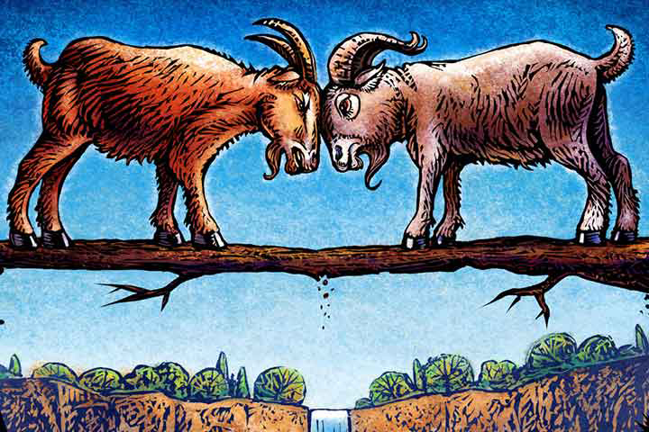

Story Three
The Two Goats
One day, two goats try to cross a weak and narrow bridge across the river. The goats are at either end of the bridge, but neither is ready to make way for the other. They come to the centre of the bridge and begin fighting about who should cross first. As they fight mindlessly, the bridge gives in, taking both the goats down into the river with it.
Moral: It is better to yield than to come to misfortune through stubbornness.